文字
背景
行間


カテゴリ:今日の出来事
経霜楓葉紅
11月26日（月）早朝。朝の寒さが厳しさを増してきましたが、本校の庭の紅葉は一段と朝日に映えてすばらしい色彩を放っています。ご近所の方で、朝の散歩の最中に本校の紅葉に感動され落ち葉をしおりにと拾われている方もいらっしゃいました。多くの方々に理解していただける自然の美しさは本当にすばらしいですね。
話は変わりますが、朝の打ち合わせで、この三連休中の各部活動の活躍の様子が発表されました。なかでも、レスリング部の２年飯島慎一郎くんは、関東選抜大会に出場が決まりました。おめでとうございます。詳しくは各部活動からの報告に委ねますが、それぞれの生徒が普段の弛まない努力・練習を積み重ねてきたからこそ、本番でその持てる力を発揮できたのでしょう。これから参加する上位の大会での活躍を期待します。
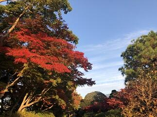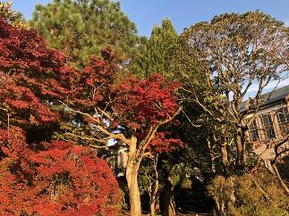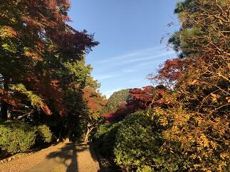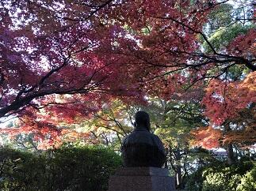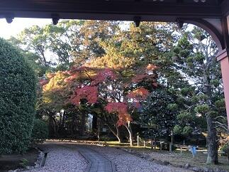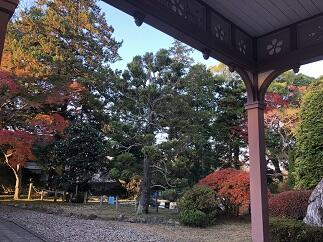朝日に映える本校の紅葉風景
話は変わりますが、朝の打ち合わせで、この三連休中の各部活動の活躍の様子が発表されました。なかでも、レスリング部の２年飯島慎一郎くんは、関東選抜大会に出場が決まりました。おめでとうございます。詳しくは各部活動からの報告に委ねますが、それぞれの生徒が普段の弛まない努力・練習を積み重ねてきたからこそ、本番でその持てる力を発揮できたのでしょう。これから参加する上位の大会での活躍を期待します。
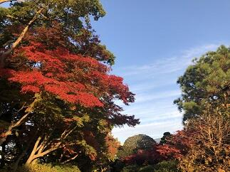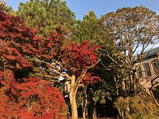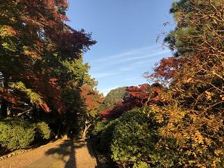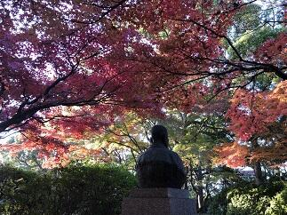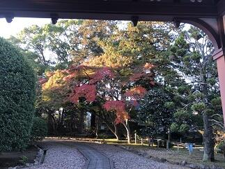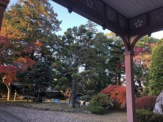朝日に映える本校の紅葉風景
記念館公開日
今日11月24日（土）は年に一度の記念館の公開日です。記念館は、平成23年（2011年）のNHK朝の連続テレビ小説「梅ちゃん先生」でも合格発表のシーンで使われるなど見る人に圧倒的な存在感と郷愁を感じさせてくれる魅力的な建物です。そして、長い歴史と伝統を刻むこの記念館は卒業生と在校生の誇りになっています。
せっかくですので、鹿山会（本校同窓会）の「佐倉高校の歴史と文化財」にある詳しい解説から一部引用・改編させていただいて記念館の紹介をさせていただきます。
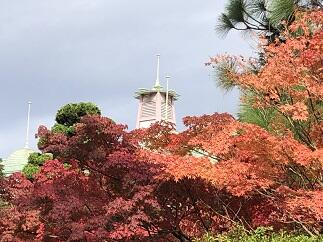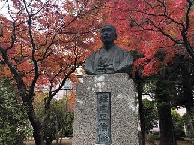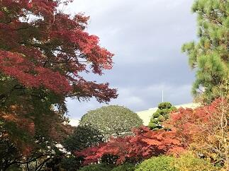「記念館は1910年（明治43年）、旧佐倉藩主堀田正倫（まさとも）公の寄付により県立佐倉中学校本館として建築された洋風木造校舎で、平成22年（2010年）には建築100周年を迎えました。」とあります。つまり、今年で108年を迎えたことになります。また、「本校は、明治32年（1898年）に県立に移管されましたが、藩校以来の校地・校舎（市内宮小路町）が手狭になったため、現校地への移転が決定しました。これに際して、堀田正倫公は、校地購入費用及び新校舎建築費4万2,000円を提供し、この資金により本館（現記念館）及び講堂が建築されました。建築工事は、明治42年（1909年）12月23日に地鎮祭、翌年2月5日に上棟式と順調に進み、4月28日に初めて授業が行われ、11月10日に新校舎で落成式が挙行されました。」とあります。まさに、現在の記念館についても堀田正倫公のご支援で校舎が建築されなければ存在しない訳です。本当にいくら感謝してもしきれない思いでいっぱいです。そして、明治、大正、昭和と多くの生徒に愛され、勉学に励んだ学び舎（現記念館）は、何度かの保存修復工事が実施されるなど今日まで大切に保存され、現在も現役で、校長室、事務室、保健室、生徒会室、会議室などに大事に使わせていただいています。なお、記念館は平成17年（2005年）7月12日に、文化庁の「国登録有形文化財」に登録指定されております。これからも、大切に保存していきたい思います。
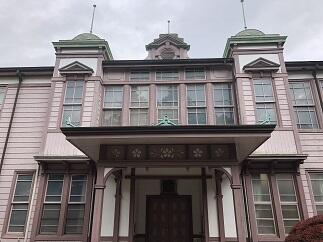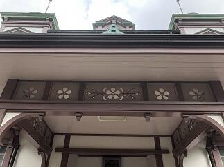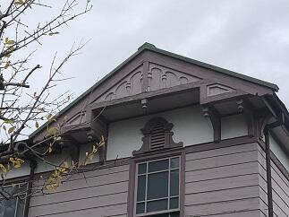スティック・スタイルでまとめた中央部分（左）、正面ポーチの透かし彫り（中）、ハンマー・ビームの妻飾り（右）
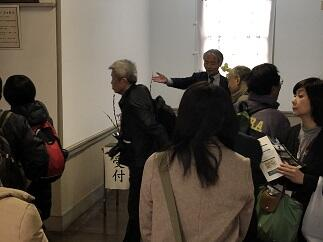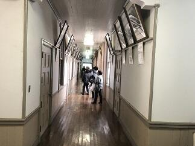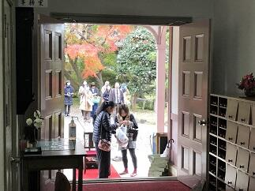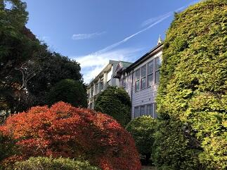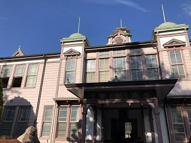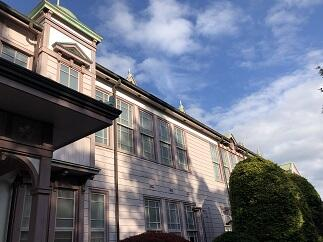公開日状況(同窓生の方々が大変懐かしんでいらっしゃっいました。）
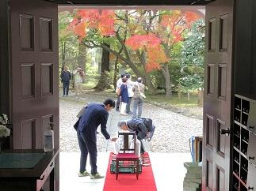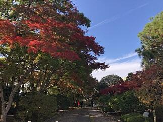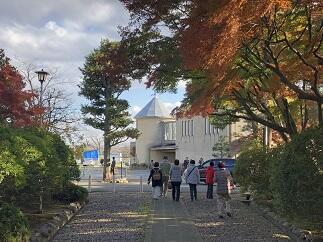ご来館いただいた方々、本日はありがとうございました。
せっかくですので、鹿山会（本校同窓会）の「佐倉高校の歴史と文化財」にある詳しい解説から一部引用・改編させていただいて記念館の紹介をさせていただきます。
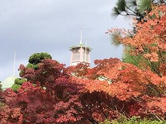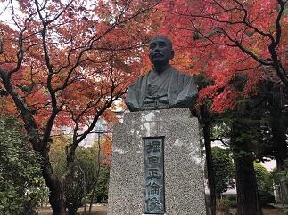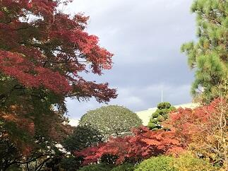「記念館は1910年（明治43年）、旧佐倉藩主堀田正倫（まさとも）公の寄付により県立佐倉中学校本館として建築された洋風木造校舎で、平成22年（2010年）には建築100周年を迎えました。」とあります。つまり、今年で108年を迎えたことになります。また、「本校は、明治32年（1898年）に県立に移管されましたが、藩校以来の校地・校舎（市内宮小路町）が手狭になったため、現校地への移転が決定しました。これに際して、堀田正倫公は、校地購入費用及び新校舎建築費4万2,000円を提供し、この資金により本館（現記念館）及び講堂が建築されました。建築工事は、明治42年（1909年）12月23日に地鎮祭、翌年2月5日に上棟式と順調に進み、4月28日に初めて授業が行われ、11月10日に新校舎で落成式が挙行されました。」とあります。まさに、現在の記念館についても堀田正倫公のご支援で校舎が建築されなければ存在しない訳です。本当にいくら感謝してもしきれない思いでいっぱいです。そして、明治、大正、昭和と多くの生徒に愛され、勉学に励んだ学び舎（現記念館）は、何度かの保存修復工事が実施されるなど今日まで大切に保存され、現在も現役で、校長室、事務室、保健室、生徒会室、会議室などに大事に使わせていただいています。なお、記念館は平成17年（2005年）7月12日に、文化庁の「国登録有形文化財」に登録指定されております。これからも、大切に保存していきたい思います。
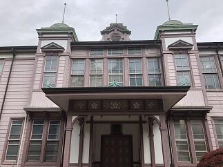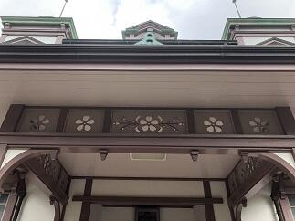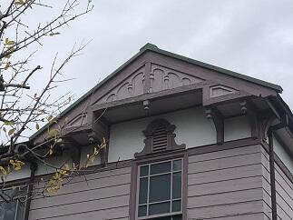スティック・スタイルでまとめた中央部分（左）、正面ポーチの透かし彫り（中）、ハンマー・ビームの妻飾り（右）
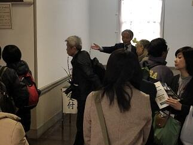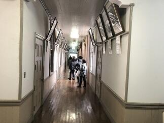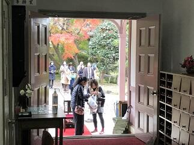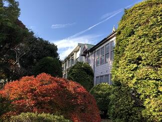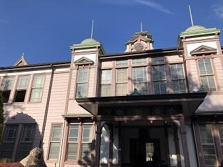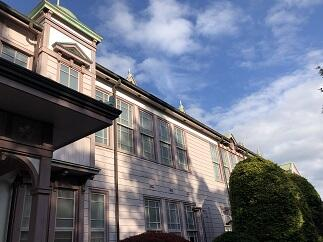公開日状況(同窓生の方々が大変懐かしんでいらっしゃっいました。）
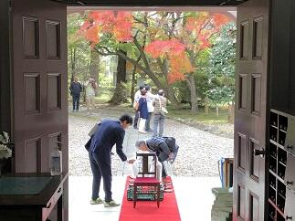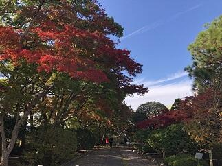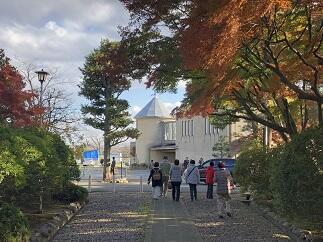ご来館いただいた方々、本日はありがとうございました。
食文化
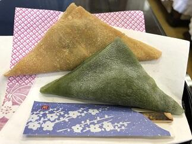今日は、また２EFGの家庭基礎研究を受講している生徒さんたちが、あん入りの生八ッ橋を作って来てくれました。出来栄えは、本家や元祖に勝るとも劣らないすばらしいものでした。あらためて和菓子のすばらしさを感じることができて、人生が豊かになりました。本当にありがとうございました。そして、このように、魅力的な和菓子を自分で作ることができる生徒さんたちは、作る人の大変さや喜びを知っているので生八ッ橋を食するたびに、私のように自分では作れないものにはわからない、ずっと多くの感想や感動を得ているのだろうなぁと感じました。
夢を育む講演会と通学合宿２
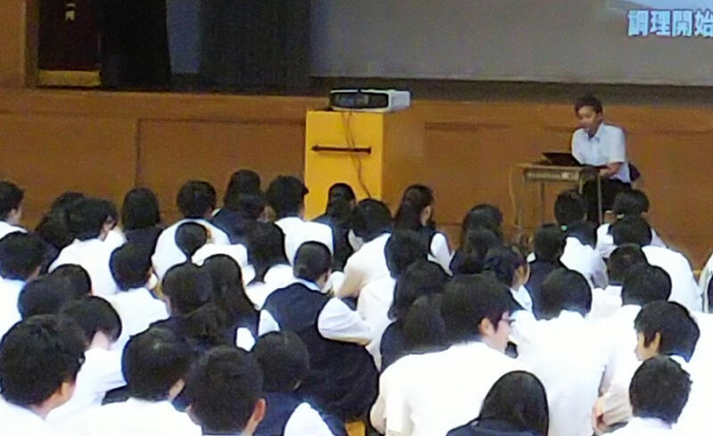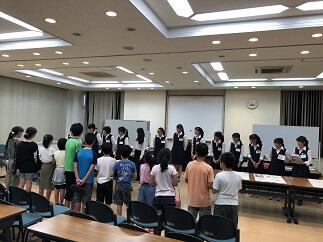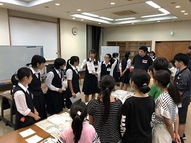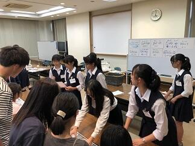今日の6、7限目を使って１学年の生徒を対象に「夢を育む講演会」が開催されました。(写真 左上) 講師は、千葉工業大学の未来ロボット技術研究センター（以下 fuRo）の室長の先川原正浩氏をお願いしました。先川原様からは、fuRo の今までの取り組みと今後を中心にロボット工学の未来についてたくさんの動画を交えてお話を伺うことができました。実際5，6年前であれば現実味が薄かったことが次々と実現されてきています。とはいえ、その時点時点で未来について、いろいろな予測がありましたが、振り返ると実現されているもの、されなかったものがあり、そこには、いろいろな要因があるわけです。言えることは科学技術の進歩だけでなく政治、経済や宗教、倫理観、道徳観などの思想や感情など含めて世界の状況を正しく見ながら未来を自分自身でしっかりと考えて判断していくことの大切さを改めて学びました。
話は代わって今日は、本校ESS部の生徒たちが、通学合宿で来ている小学生に対して、英語で説明して化学実験を体験をしてもらうというイベントを開催しました。（写真 右上、下段）内容は「人工イクラを作る実験」「墨流し」でした。参加した小学生はとても楽しく参加していました。本校ESS部の生徒たちにとっても小学生に教えるという大変貴重な体験をさせていただいてとても良かったと思います。明日も行う予定です。
話は代わって今日は、本校ESS部の生徒たちが、通学合宿で来ている小学生に対して、英語で説明して化学実験を体験をしてもらうというイベントを開催しました。（写真 右上、下段）内容は「人工イクラを作る実験」「墨流し」でした。参加した小学生はとても楽しく参加していました。本校ESS部の生徒たちにとっても小学生に教えるという大変貴重な体験をさせていただいてとても良かったと思います。明日も行う予定です。
防災訓練に思うこと
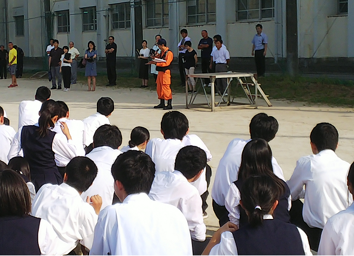本日、防災訓練がありました。天候が心配されましたが、無事に訓練を行うことができました。普段何気なく歩いている廊下や階段の長さ・幅・傾斜・障害物の有無、授業を受けている教室や校舎の配置や壁や窓の位置、そして自分が活動している場所で普段はいつごろ何をしているかなど、いざ何か起こった時にはどのようなことに気を付け一人ひとりが行動したら学校全体が安全に命を守る活動ができるのか。防災訓練は、平常時には意識せずに生活している場を今一度点検し命を守るための正しい行動がとれるように見直す良い機会です。訓練だからこそ、その意味や意義を理解した主体的な参加が求められます。自助・共助・公助といいますが、最近地震・台風だけでなく局地的に起こる豪雨や強風など自然災害が大変多く発生しています。最初の3秒、30秒、3分・・時間の経過に合わせ周りの環境が急変するなか、自らの命を守る行動とともに、周りの人々と協力して更なる安全確保へ向けて何ができるのか日ごろから想像力を発揮して考え、できる限り多くの人々との協力関係を築いて十分な準備をしておくことが今まで以上に重要となっています。
人は決してひとりでは生きてない。多くの人々との協力のなかで生きている。防災訓練は家族・先生・友人・知人等自分に関わる多くの方々への感謝を忘れない日にもして欲しいと思います。
人は決してひとりでは生きてない。多くの人々との協力のなかで生きている。防災訓練は家族・先生・友人・知人等自分に関わる多くの方々への感謝を忘れない日にもして欲しいと思います。
生徒会役員任命式・壮行会
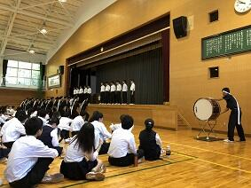今日は、本日から任期開始となる新生徒会執行部役員の任命式と、この夏の全国高等学校総合体育大会(インターハイ)の岐阜県で開催されるカヌー競技や第42回全国高等学校総合文化祭の将棋や工芸に千葉県の代表として出場・参加出展する生徒の諸君への壮行会が行われました。壮行会では、新生徒会の増田会長から激励の言葉が贈られました。その後、野球応援でも千葉県一の応援をしてくれたラグビー部を中心とする応援委員会からエールと応援歌が贈られました。猛暑続きであったため、先生・生徒の皆さんの協力で時間は15分間とテンポよくコンパクトに行われ大変心のこもった良い会だったと思います。皆さんの健闘を祈ります。
SGH運営指導委員会
 本校の地域交流施設でSGH運営指導委員会が行われました。今年度文部科学省で行われる中間評価に関係して本校で作成したSGH事業の自己評価表に基づいて昨年度までの実施状況や今年度の実施計画や取り組み状況についてご説明し、そのつど、委員の皆さんから、ご指導ご助言をいただくとともにご提案をいただきました。委員の先生方からはSGHの取り組みを見ていて、生徒が1年間であるいは、経年で成長していく姿が見られることが評価されました。結果だけでなく学びのプロセスも個人個人でしっかりと評価することで、自己の課題や進歩を把握しながら学びを進めていけるよう今後も進めていきたいと思います。「日本の歴史・伝統・文化を踏まえて多文化共生社会を構築するグローバルリーダー」の育成を目指して今後とも全校体制で取り組んでまいります。
本校の地域交流施設でSGH運営指導委員会が行われました。今年度文部科学省で行われる中間評価に関係して本校で作成したSGH事業の自己評価表に基づいて昨年度までの実施状況や今年度の実施計画や取り組み状況についてご説明し、そのつど、委員の皆さんから、ご指導ご助言をいただくとともにご提案をいただきました。委員の先生方からはSGHの取り組みを見ていて、生徒が1年間であるいは、経年で成長していく姿が見られることが評価されました。結果だけでなく学びのプロセスも個人個人でしっかりと評価することで、自己の課題や進歩を把握しながら学びを進めていけるよう今後も進めていきたいと思います。「日本の歴史・伝統・文化を踏まえて多文化共生社会を構築するグローバルリーダー」の育成を目指して今後とも全校体制で取り組んでまいります。 チバニアンって何だろう？
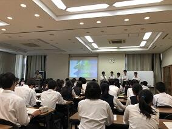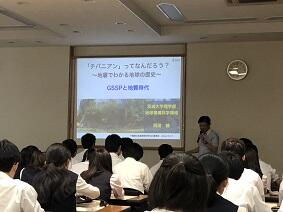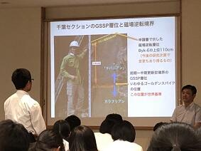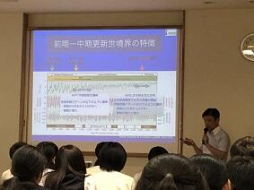本日は、佐倉アクティブ講座に茨城大学理学部地球環境科学領域教授の岡田誠先生にお越しいただいて講義を受けることができました。
皆さんよくご存知のように岡田誠教授は、地球の地質年代で更新世のうち、約77万年から12万6千年前の年代名称を「チバニアン」と名づけ、その基準地として千葉県市原市の地層を国際地質科学連合に申請したことで脚光を浴びた研究グループの中心的な役割を果たしている先生です。
先生からは、地層面にある生物の化石や宇宙塵、風成塵、花粉粒、大気起源の放射性核種などからは地球環境について何がどのようにわかるのか。
地層面は、ある瞬間の世界が二次元に凝縮された世界になっているので、地層からは時間を読み解くことができること。
δ18O の酸素の安定同位体の元素比から気候変動を解析する方法など、現代を紐解くため過去の状況を学ぶことの方法やおもしろさと大切さを教えていただきました。
先生には講演後の生徒からの熱心な質問にも丁寧にお答えしていただきました。岡田先生ありがとうございました。
皆さんよくご存知のように岡田誠教授は、地球の地質年代で更新世のうち、約77万年から12万6千年前の年代名称を「チバニアン」と名づけ、その基準地として千葉県市原市の地層を国際地質科学連合に申請したことで脚光を浴びた研究グループの中心的な役割を果たしている先生です。
先生からは、地層面にある生物の化石や宇宙塵、風成塵、花粉粒、大気起源の放射性核種などからは地球環境について何がどのようにわかるのか。
地層面は、ある瞬間の世界が二次元に凝縮された世界になっているので、地層からは時間を読み解くことができること。
δ18O の酸素の安定同位体の元素比から気候変動を解析する方法など、現代を紐解くため過去の状況を学ぶことの方法やおもしろさと大切さを教えていただきました。
先生には講演後の生徒からの熱心な質問にも丁寧にお答えしていただきました。岡田先生ありがとうございました。
SSH特別講義
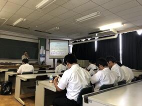SGHにおいては、昨日、今日と日本政策金融公庫から２名の講師が来てくださり、２年生がビジネスプランの研究の進め方など班ごとにアドバイスをいただいていました。また、SSHにおいては、KEK（高エネルギー加速器研究機構）から本校の卒業生である宍戸寿郎先生にお越しいただきました。先生は、最新宇宙論に触れられ、宇宙の成り立ちに関して、宇宙誕生直後に同じ数だけあったはずの粒子と反粒子が、現在の宇宙ではどうして、粒子ばかり存在するのかという現代物理学の謎に挑むため「CP対称性の破れ」（粒子と反粒子の性質の違い）に関する実験（電子と陽電子を衝突させる）やこの実験を行うための加速器や測定装置についてお話しいただきました。講義の最後には、生徒たちに「どの分野に進んでも、その分野に貢献できるような人になってほしい」と激励の言葉をいただきました。宍戸先生ありがとうございました。
SGH特別授業
1年生は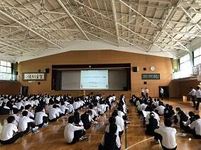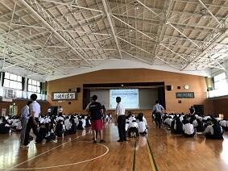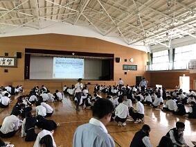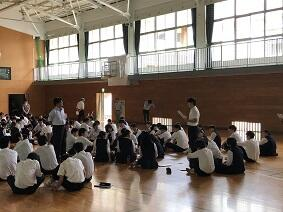SGHの課題研究のテーマを決めていくうえで、今後解決してみたいテーマをどのように一つに絞っていくのかが重要になります。本日は、ビジネスプラン作成を参考にして、体験的に学ぶ講座を、日本政策金融公庫 南関東創業支援センター所長でいらっしゃる寺田博史様を講師としてお招きして講義をお願いしました。考える対象を絞って、よいアイデアの出すための方法や、テーマを絞りこむための視点の置き方など
これからの探究活動を進めるうえでとても大切なことを学ぶことができたと思います。暑い中、講師をお引き受けいただいた寺田先生、本当にありがとうございました。
これからの探究活動を進めるうえでとても大切なことを学ぶことができたと思います。暑い中、講師をお引き受けいただいた寺田先生、本当にありがとうございました。
関東甲信地方梅雨明け（びっくり）
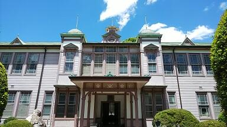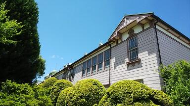本日6月29日、気象庁は関東甲信地方が梅雨明けしたとみられると発表しました。(平成30年の梅雨入りと梅雨明け（速報値）)統計を取り始めて以来、関東甲信地方が6月に梅雨明けするのは初めてのことだそうです。これまで関東甲信地方で最も早く梅雨が明けたのは2001年の7月1日だったそうです。
梅雨明けの時期ですが、平年と比べると(7月21日ごろ)より22日早く、昨年と比べても(7月6日ごろ)より7日早い梅雨明けだそうです。
梅雨の期間ですが、今年は梅雨入りしたのが6月6日ですから梅雨明け前日の6月28日までの日数は23日間となります。これは、梅雨の期間が6月11日から7月4日までだった1978年に並んで1番の短さだそうです。（梅雨入り・明けの時期は、秋に再検討され、見直されることもあるそうです）
いずれにしても、このところ一気に真夏に入ってしまったような暑さになっていたので、へんだなぁと思っていましたが、まさか、もう梅雨が明けてしまうなんて本当にびっくりです。熱中症対策（校長室もこのところ連日30℃です）や恵みの雨が少なかったことによる水不足対策にしっかり取り組まないといけないですね。
いずれにしても、このところ一気に真夏に入ってしまったような暑さになっていたので、へんだなぁと思っていましたが、まさか、もう梅雨が明けてしまうなんて本当にびっくりです。熱中症対策（校長室もこのところ連日30℃です）や恵みの雨が少なかったことによる水不足対策にしっかり取り組まないといけないですね。
はやぶさ２がRyuguへ
地球から約３億キロ（地球と太陽の距離の2倍）離れた小惑星Ryugu（リュウグウ）を目指して2014年12月に打ち上げられた小惑星探査機「はやぶさ２」が、いよいよ本日、リュウグウに到着すると国立研究開発法人宇宙航空研究開発機構（JAXA）から発表されました。
また、「はやぶさ２」が24日にリュウグウから約４０キロに近づいたときに撮影した画像にはそろばん玉のような形をしたリュウグウとその表面の岩の塊やクレーターが鮮明に確認できるものが公開されています。（JAXAはやぶさ２プロジェクト）
JAXAでは、「はやぶさ2」のリュウグウの高度20㎞地点への到着に際して、本日16時00分～17時00分（予定）に記者会見を開催するそうです。これまで3年半の長旅を緻密な軌道決定と軌道計算に支えられ幾度かの軌道修正を経て飛んできた「はやぶさ２」の今回の小惑星サンプルリターンのミッションには、惑星の起源だけでなく地球の海の水の起源や生命の原材料をも探求するミッションが含まれているということで、多くの謎の解明に向けてこれから行われる数々のミッションの成功がとても楽しみです。
また、「はやぶさ２」が24日にリュウグウから約４０キロに近づいたときに撮影した画像にはそろばん玉のような形をしたリュウグウとその表面の岩の塊やクレーターが鮮明に確認できるものが公開されています。（JAXAはやぶさ２プロジェクト）
JAXAでは、「はやぶさ2」のリュウグウの高度20㎞地点への到着に際して、本日16時00分～17時00分（予定）に記者会見を開催するそうです。これまで3年半の長旅を緻密な軌道決定と軌道計算に支えられ幾度かの軌道修正を経て飛んできた「はやぶさ２」の今回の小惑星サンプルリターンのミッションには、惑星の起源だけでなく地球の海の水の起源や生命の原材料をも探求するミッションが含まれているということで、多くの謎の解明に向けてこれから行われる数々のミッションの成功がとても楽しみです。
学校訪問（臼井西中学校保護者様）
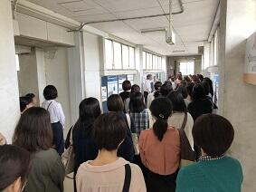 本日は、佐倉市立臼井西中学校の保護者の方々が本校の見学にいらっしゃいました。野村教頭先生の案内で、地域交流施設、庭園、東郷池、校長室や事務室のある記念館、そしてメインとなる生徒の授業の様子など熱心にかつ楽しそうに見学されていらっしゃいました。また、SGHやSSHの活動や海外での生徒の活動の様子について掲示物を御覧になりながら説明（写真左）に耳を傾けていらっしゃいました。次の訪問予定の学校もあるということから限られた時間の中でのご見学となり、十分にご理解いただけたかが心配ですが、教頭先生の楽しいトークと合わせて明るく真摯に取り組む授業の様子など学校の雰囲気は感じ取っていただけたのではないかと思います。本日の訪問ありがとうございました。8月1日、2日の学校説明会もお持ちしております。
本日は、佐倉市立臼井西中学校の保護者の方々が本校の見学にいらっしゃいました。野村教頭先生の案内で、地域交流施設、庭園、東郷池、校長室や事務室のある記念館、そしてメインとなる生徒の授業の様子など熱心にかつ楽しそうに見学されていらっしゃいました。また、SGHやSSHの活動や海外での生徒の活動の様子について掲示物を御覧になりながら説明（写真左）に耳を傾けていらっしゃいました。次の訪問予定の学校もあるということから限られた時間の中でのご見学となり、十分にご理解いただけたかが心配ですが、教頭先生の楽しいトークと合わせて明るく真摯に取り組む授業の様子など学校の雰囲気は感じ取っていただけたのではないかと思います。本日の訪問ありがとうございました。8月1日、2日の学校説明会もお持ちしております。
本日は、佐倉市立臼井西中学校の保護者の方々が本校の見学にいらっしゃいました。野村教頭先生の案内で、地域交流施設、庭園、東郷池、校長室や事務室のある記念館、そしてメインとなる生徒の授業の様子など熱心にかつ楽しそうに見学されていらっしゃいました。また、SGHやSSHの活動や海外での生徒の活動の様子について掲示物を御覧になりながら説明（写真左）に耳を傾けていらっしゃいました。次の訪問予定の学校もあるということから限られた時間の中でのご見学となり、十分にご理解いただけたかが心配ですが、教頭先生の楽しいトークと合わせて明るく真摯に取り組む授業の様子など学校の雰囲気は感じ取っていただけたのではないかと思います。本日の訪問ありがとうございました。8月1日、2日の学校説明会もお持ちしております。 芒種２
看脚下

今日は、本校の平成30年度第1回開かれた学校づくり委員会が開催されました。「開かれた学校づくり委員会」は、各県立学校が創意工夫をしながら、学校と地域がより一層連携を深め、安全・安心で開かれた学校づくりを進めるために、保護者や地域の方々に学校運営や教育活動について検討・評価をしていただき、併せて「県内1,000か所ミニ集会」等の学校が地域における学びの拠点となるような取組の企画・運営を行う組織です。学校としては、学校の取り組みを委員の方々に、いろいろな角度から見ていただき率直なご意見をいただける貴重な機会となっています。学校が進むべき道の中で今どの地点にいるのか、これまで歩いてきた道は正しかったのかどうか。学校として自校を省みるにあたり、いただいたご意見ご提案は、とても重要となります。自分たちの見えている部分と見えなくなっている部分に気づくことで、しっかりと足元を見つめなおしながら一歩一歩進めてまいります。開かれた学校づくり委員の皆さま本日も、ありがとうございました。
苺二衣
三寒四温
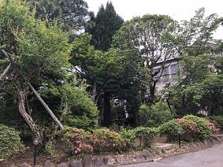本日、今年度最後の内科検診の日となりました。多くの学校医の先生方にご協力をいただいて無事内科検診も終了することができました。ありがとうございました。今日の検診を行っていただいた先生には、５月９日にも検診をしていただきました。その日は、最高気温が13.7℃ということで、前日（14.1℃）に引き続きとても寒い１日でした。そういえば、東京都心も同じような状況で、「5月としては、2日連続で15℃未満になったのは25年ぶり」という報道があったのを記憶されている方も多いのではないでしょうか。ですから、その日の内科検診では、少しでも寒さを和らげるため暖房をいれました。それからたった一週間後の今日はといえば、うって変わって夏日となり、最高気温28.1℃ということでした。（もっと暑かったのではないかと個人的には感じました。）さらに今日の最低気温は13.1℃で一日の中での温度変化も15℃と激しいものとなりました。これだけ寒暖の差が激しいと身体は自然に体温調整のためにエネルギーを使います。知らないうちにこれだけでも、疲れがたまる要因になります。生徒の皆さんは、昨日、今年初めての定期考査の日程が示され考査に向かって準備に余念がないと思いますが、本番で力が発揮できるように体調管理にはくれぐれも気をつけましょう。
人間好事節
 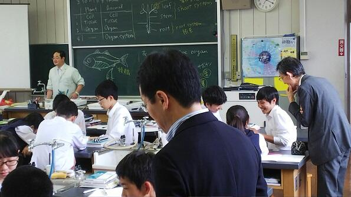本日は、千葉県教育委員会から澤川和宏教育長と大木実教育次長に本校を訪問していただきました。本校の沿革や現状に加えて本校の良さや課題についても説明させていただき、その後、実際に授業や地域交流施設の展示室を含めた校内施設を見ていただきました。授業参観では、先生と生徒たちの息のあった授業展開に時間が経つのも忘れてつい引き込まれてしまいました。
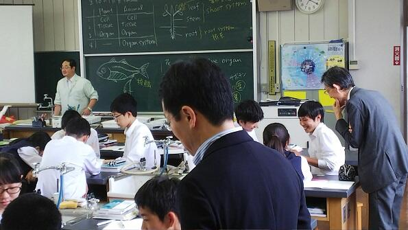本日は、千葉県教育委員会から澤川和宏教育長と大木実教育次長に本校を訪問していただきました。本校の沿革や現状に加えて本校の良さや課題についても説明させていただき、その後、実際に授業や地域交流施設の展示室を含めた校内施設を見ていただきました。授業参観では、先生と生徒たちの息のあった授業展開に時間が経つのも忘れてつい引き込まれてしまいました。また、本校には、日本の美しい四季の移ろいを感じられる庭園があり、学校の中も生徒たちの様子からその時々に応じた趣が感じられます。自分の心が雑多なことに惑わされていると、１年中すばらしい時期であることをついつい忘れてしまいがちですが、いつだってすばらしい時なのですからそれを楽しめるような気持ちで毎日を過ごしたいものです。